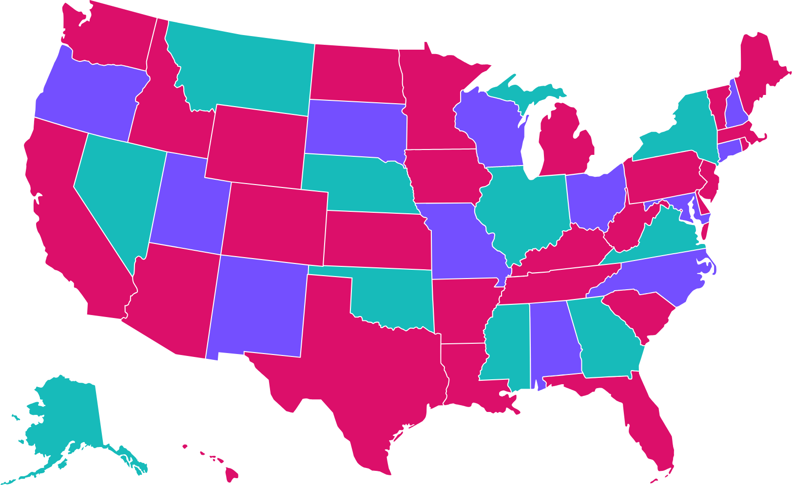
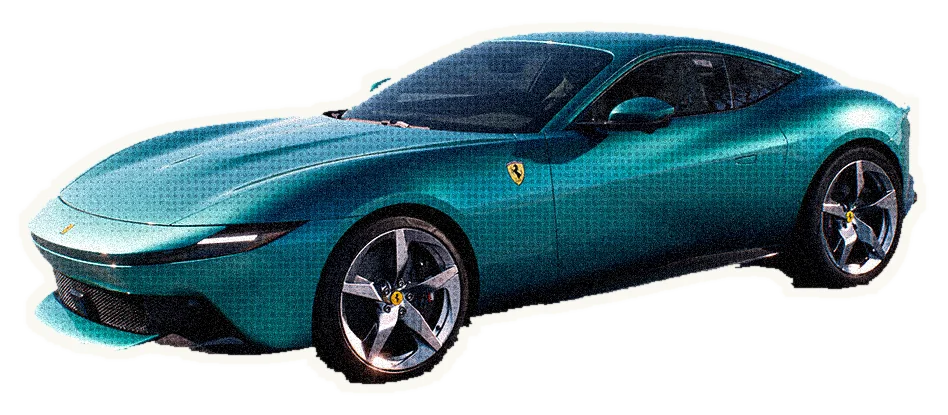

Why
Coco
For almost two decades, Coco Media has created campaigns, trailers, and behind-the-scenes content for Hispanic and Latin American audiences.
We help studios, streamers, networks, distributors, and entertainment brands connect with those audiences, finding each story's cultural relevance without losing what makes it unique, so audiences see themselves in your content.
Based in Miami · Chicago
- Any production, any culture→ Hispanic + Latin audiences
- Hispanic + Latin productions→ The world
- Hispanic + Latin productions→ Hispanic + Latin audiences
What Makes
Us Different
Cultural Ownership
We speak the language, literally and culturally. From nuance to rhythm, we know how to make content resonate authentically across diverse U.S. Hispanic and Latin American markets, avoiding clichés and stereotypes.
Operational Authority
Network-grade finishing, secure asset handling, and delivery specs met the first time. Big launches, tight windows, no surprises.
Trusted Leadership + Execution
Our leadership brings 25+ years of entertainment experience, including time inside major networks and media companies. That network-side perspective shapes how we think, create, and execute.
Award-Winning Work
20+ industry awards, including Grand Prix + Gold at the Hamburg World Media Festival, a Telly Award, and multiple Promax + BDA wins across Latin America and North America.
Our
Hubs
Miami is the creative and commercial hub of U.S. Hispanic media. Chicago is home to one of the largest and most influential Latino communities in the country. Together, they give us direct access to the cultural trends, industry relationships, and audience insights that matter most to entertainment brands targeting Hispanic viewers.
Not to mention: unlimited access to coladas and hot dogs.

Clients Trust Us
Working with Coco is like getting on a Ferrari with cruise control. Already waiting for the next ride.

This wouldn’t have been possible without Coco. It’s a luxury to work with people like you.
I can’t emphasize enough the taste and confidence with which we worked through those intense weeks. I wouldn’t hesitate for a second to do it again with Coco Media.
Meet the Founder
Mary Cruz
Camacho
Founder · Creative Director · Executive Producer
Before putting her name on the door, she spent 25+ years in entertainment marketing, including years inside major networks, leading creative teams and building award-winning campaigns for Hispanic and Latin American audiences. That network-side view is why she knows what a launch actually takes: the strategy, the politics, the deadlines, and everything in between.
Today she leads every project as Creative Director and Executive Producer, alongside strategists, editors, and storytellers who care about the work as much as she does.
Executive-level experience.
Zero drama.
Looking for a Creative Partner?
The kind that gets the culture, knows the industry, and loses sleep over the work the same way you do. 25+ years in entertainment marketing will do that to you.